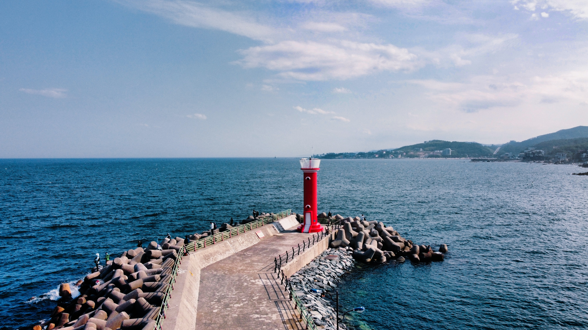

"동궁과 월지"
동궁과 월지는 674년 신라 왕궁의 별궁으로 창건된 터로써 지금은 경주의 야경을 대표하는 관광지이다. 옛날부터 달빛이 아름다운 연못이라고 불리던만큼 현재도 달빛과 주변의 불빛을 반사하는 연못의 모습이 아름답다. 연못주변으로 산책로도 존재해서 초저녁부터 저녁까지 낭만적인 산책을 할 수 있는 관광지다.
오시는 길
경북 경주시 원화로 102 안압지

"감포항"
경주 동해바다쪽에 위치한 횟집과 시장이 위치하고 있는 감포항. 감포항 근처 다양한 해수욕장과, 해돋이 명소인 문무대왕수중릉을 비롯하여 연중 관광객의 발길이 끊어지지 않는 곳.
오시는 길
경상북도 경주시 감포읍 감포리 369-49
"첨성대"
국보 31호 첨성대. 첨성대는 별과 해, 달을 관측하는 천문대로 하늘의 움직임을 알려 백성들에게 농사시기를 알려주는 동양에서 가장 오래된 관측대이다. 경주하면 제일 대표적으로 떠오르는 관광지라고 할 수 도 있다. 많은 매체로 접해봤겠지만 실제로 가서 본다면 그 시절 신라시대 선덕여왕의 위엄이 느껴진다고 한다.
오시는 길
경상북도 경주시 인왕동 839-1
"송대말등대"
과거 암초들때문에 사고가 잦자 암초위치를 표시하고자 시작되어 현재 지역을 상징하는 시설로써의 등대가 되었다. 이 등대는 한옥위에 지어졌다는 놀라운 사실이 있고 등대엔 빛 체험 전시관까지 있어서 일석이조로 즐길 수 있는 곳이다.
오시는 길
경북 경주시 척사길 18-94